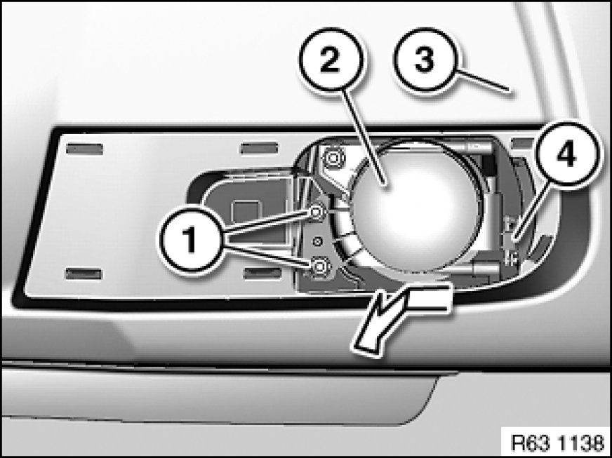
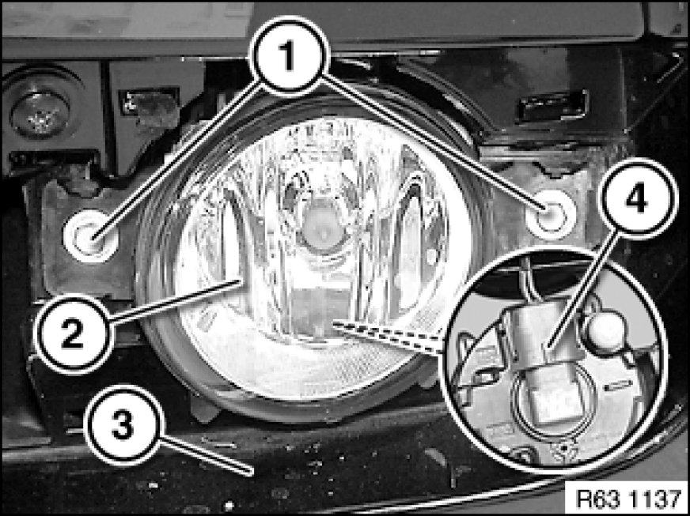

63 17 060 Removing and installing/replacing left or right front fog lamp (M aerodynamic kit)
63 17 060 - Removing and installing/replacing left or right front fog lamp (M aerodynamic kit)

Warning!
Follow instructions for handling light bulbs (exterior lights) Instructions for Handling Light Bulbs (Exterior Lights).

Necessary preliminary tasks:
- Remove fog lamp trim

Build date up to 09/06:
Release screws (1). Tightening torque 63 17 1AZ [1][2]Fog/Driving Lamp.
Remove fog lamp (2) from bumper trim (3) in direction of arrow.
Disconnect associated plug connection.
Installation Note:
Feed attachment point (4) first into fog lamp mounting.

Build date after 09/06:
Release screws (1). Tightening torque 63 17 1AZ [1][2]Fog/Driving Lamp.
Remove fog lamp (2) from bumper trim (3) and disconnect plug connection (4).

Installation Note:
If necessary, remove bulb Service and Repair.
Adjust front fog lights Adjusting Fog Lamp (M Aerodynamic Kit).